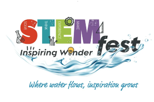
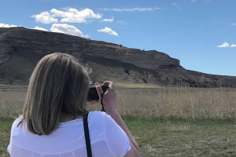

Graphic Design
Alicia has experience building graphics for websites, marketing materials and event logos. She works closely with her team to ensure customers are getting the best product design they are looking for.
Photography
As an avid lover of photography and an amateur photographer for more than ten years, Alicia has taken her camera to many events and locations, as well as all over the world with her.
Video Editing
Alicia has more than 8 years of experience filming and editing videos, primarily using Edius and Adobe Premiere. Her abilities also include editing short-form social media videos.
Videography
With a degree in Culture and Media Communications and as a former journalist, video storytelling is Alicia's biggest passion. She has won two awards for her stories in 2021 and 2023.
Web Design

After being with the Education Service Center for only six months, Alicia designed a completely new website from the bottom up by herself. In addition, she's designed sites for numerous non-profits in Central Texas.
Web Development
Alicia is (soon to be) proficient in HTML and CSS. She is working towards a degree in Web Development from Champlain College.